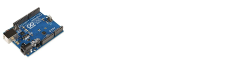
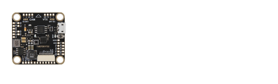
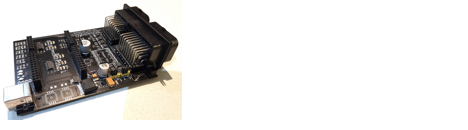

Introduction
What are printed circuit boards (PCBs), why do we need them, and what are the tools we use to design them?
What are Printed Circuit Boards (PCBs)?
Electrical device manufacturing before PCBs was a hard job. Wires needed to be routed



Printed circuit boards are boards designed to provide both mechanical support and electrical connectivity to electronic components. They make it easier to connect many components in one efficient form, saving space that would otherwise be taken up by wiring and making smaller, more complex electronics possible.
Nowadays, PCB design has become much more convenient, and manufacturing has become much cheaper. It's now possible for an average person to design, order, and manufacture their own custom PCBs!
This is reflected in the fact that designing and manufacturing custom PCBs has become standard practice for student teams at USYD, such as Sydney Motorsports, USYD Rocketry, and SIRI. PCBs are also increasingly common for aesthetic projects, especially among electronics hobbyists and at popular technology conventions such as OpenSauce.
../assets/images/usrc-keychain-pcb.jpgIf that's gotten your attention and you're now eager to design a PCB, you might be wondering how to get started!
Enter: KiCad
KiCad is one of the most commonly used open-source software packages for PCB design. It has the tools needed throughout the PCB design process, a large standard library of component symbols and footprints, a wide variety of community-maintained plugins, simulation features, and much more.
We won't be able to cover every feature KiCad offers in this workshop, but we'll take you through the basics and some additional tools to help you get started.
Download KiCad 10.0
This workshop uses KiCad 10.0. If you haven't already, download KiCad from the official KiCad downloads page. Choose the installer for your computer's operating system.
Downloading from Australia
If the download page offers a choice of mirrors, select Australia (AARNet).
Open downloads page (choose Australia / AARNet)Disclaimer: This workshop documentation was created on a Windows device, so the visuals may look different for macOS or Linux users. The overall steps and processes should be the same. If you're attending the workshop in person and feel stuck, reach out to one of our volunteers and they'll be happy to help!